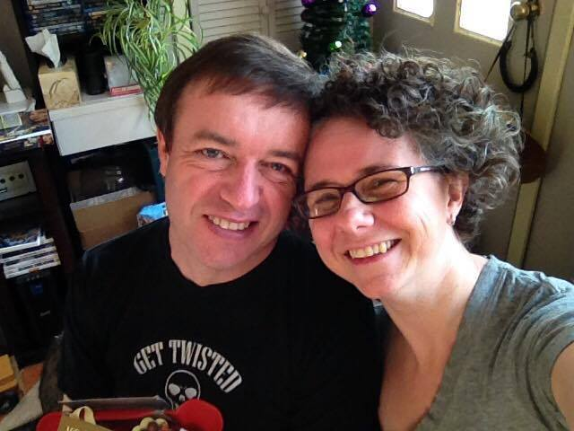

<div class="views">
    <div class="view view-main">

        <div class="pages navbar-fixed">
            <div class="page">

                <div class="navbar">
                    <div class="navbar-inner">
                        <div class="left"><a href="#" class="open-panel link icon-only"><i class="material-icons">menu</i></a></div>
                        <div class="center">About</div>
                    </div>
                </div>

                <div class="page-content">
                    <div class="list-block">
                        <div class="container">
                            
                            <p>Welcome!</p>
                            <p>I suppose since you’re here, you have some questions for us: ‘What’s iGalen?’ ‘Who are the people behind it?’ ‘What are their motives?’ ‘Is it a power-hungry corporation bent on dominating our world?’ (well, yes…with organic healthcare!)</p>
                            <p>So, let’s clear the air with some intros. My name is Brent Guild. I am a computer geek, and I’ve been getting my hands dirty with these techy gizmos my entire life, whether its opening a computer store, doing data entry work or forming an online service community.</p>
                            <p>I would also like to introduce you to my lovely wife, Jane. She has used her spectrum of skills as a writer, editor, graphic and web designer and manger in her career.</p>
                            <p>And as you can see at the bottom right of this webpage, we are platinum leaders and distributors at iGalen.</p>
                            <p>Now, despite our diverse professional backgrounds, my wife and I have a lot of shared interests. We have this innate draw towards nature. We are avid gardeners, and you won’t find a day when our house doesn’t have a foster dog from the local rescue society. And this proximity to nature has given us perspective!</p>
                            <p>So, you may be wondering, WHY ARE WE SO PASSIONATE ABOUT THIS PRODUCT? Why does it inspire us?</p>
                            <p>We have observed that in our fast-paced society, struggling against deadlines, we have taken shortcuts and turned a blind eye to the consequences. And this stress, fast food, anxiety, sleep deprivation and medication use is slowly but surely degrading our internal systems.</p>
                            <p>I had personally been afflicted with a painful condition for several years, and this product has essentially kick-started my recovery. Emulin+™ from iGalen is an all-natural botanical supplement that helps people with managing their carbs intake, keeping diabetes and a host of other diseases at bay by fighting the inflammation that our carb-centric diet causes.</p>
                            <p>Emulin+™ is merely one of the products by iGalen that allows our body to function at peak capacity, thus enhancing and enriching our lives. Our products boost you up to your 100% so that you can have a productive and energetic lifestyle.</p>
                            <p>We welcome your questions and would be even happier to welcome you to our team!</p>
                        </div>
                    </div>
                </div>
            </div>
        </div>
    </div>
</div>